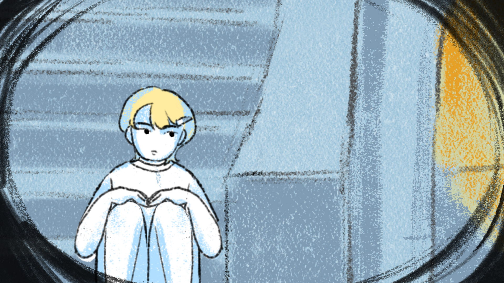
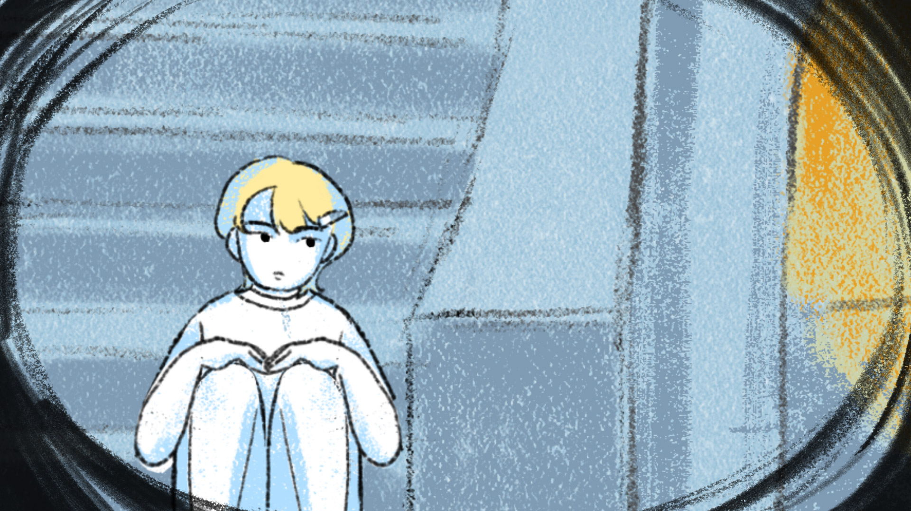
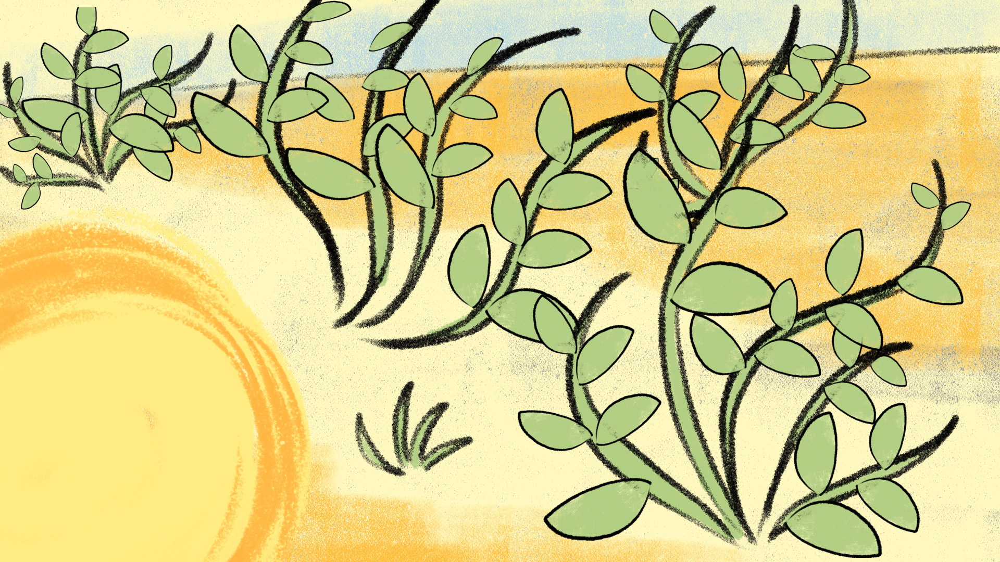

Soleil Disparu
Réalisation d’un court-métrage d’animation sur le sujet d’un monde futur. J’ai imaginé un monde sans Soleil où des objets soleils seraient laissés aux enfants jusqu’à ce qu’ils grandissent. Il leur faudra alors rendre leur soleil. Mais un enfant ne veut pas, on suit son histoire. Ce court-métrage mélange animation image par image et motion. J’ai choisi des brushs imitant des techniques sèches qui viennent ainsi rappeler la terre des souterrains. Les couleurs évoquent la température de l’environnement, bleu lorsqu’il y a peu de lumière et que l’environnement est froid, orange et jaune lorsque qu’il est chaud et lumineux.
Animation et motion sur AfterEffects et Photoshop
 

